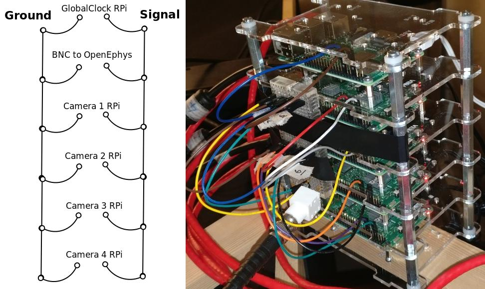

Camera and GlobalClock Raspberry Pi setup¶
The camera system is synchronised with the OpenEphys Acquisition board recording using regular TTL pulses from GlobalClock Raspberry Pi. This allows integrating any number of cameras into the system.
The following procedures are identical for GlobalClock RPi and Camera RPis, unless specified otherwise.
Most efficient way to set up multiple RPis is to set up a single Camera RPi using the instructions below and then make copies of it’s SD card for other RPis using this guide: Making copies of Raspberry Pis.
This tutorial and related python modules are based on Raspberry Pi 3 Model B with Camera Module V2.
Hardware setup¶
Assembling Raspberry Pi Camera Module¶
Installing a Camera Module to GlobalClock RPi is not necessary.
The Raspberry Pi (RPi) Camera Module is usually bought and fitted separately to the RPi board. Preferably the camera should be used with HDMI cable extension sold on Pimoroni website. This allows the camera to be positioned distant from the RPi and the angle manipulated more comfortably. Instructions for its assembly should be available from the provider.
Regardless of whether the HDMI cable extension is used or not, a board with the flat camera cable attached will need to be assembled to the RPi board. Attach the flat cable to the interface right next to the HDMI output. Make sure the metal contacts on the cable touch the metal contact on the RPi interface. See image below. Push down on the clip on the interface to mechanically secure the connection.
Wiring for GlobalClock TTL pulses¶
Standard GPIO suitable breadboard jumper wires and a breaboard can be used to conveniently connect Camera and GlobalClock Raspberry Pis and a BNC connector for OpenEphys into a single circuit for synchronization with the GlobalClock TTL pulses.
By default python scripts expect the BCM pin 18 is used on all devices, but this is especially important for the GlobalClock RPi, which can only used a limited selection of RPi pins for producing its very regular signal. See https://pinout.xyz/ for information on which pin is the BCM 18 pin on your Raspberry Pi. Any ground pin on RPi can be used for this circuit. See below for wiring diagram as well as an image of actual setup with GlobalClock RPi and 4 Camera RPis. Any number of Camera RPis can be added to the circuit.
Software setup¶
Installing Raspberry Pi OS: Raspbian¶
Download Raspbian Stretch Lite (Here used version kernel version 4.14) from Raspberry website. Unpack the downloaded .zip file with Archive Manager to get access to the .img file.
Download Etcher from this website. Unpack the downloaded .zip and run (double-click) the Etcher .AppImage. Select the Raspbian .img file and your inserted microSD card. Write the image (Flash button).
Insert the microSD card into Raspberry Pi.
Connect keyboard and monitor to Raspbery Pi.
Connect Raspberry Pi to the internet¶
It is not important how the RPi is connected to the internet, but below is one possible set of instructions to follow.
This tutorial instructs you to connect the RPi to the internet using the same network connection as is used for your recording PC, if you used the following method to set it up: Connect to the local network. This means you will not be able to use the Recording PC to access the internet, while you work through the part “Install necessary libraries on Raspberry Pi”. If you can use another means of achieving network connection on the RPi, you can ignore steps in this part relating to interfaces file. Otherwise, connect the RPi to the network with the same ethernet cable as you were so far using on the Recording PC.
Add /etc/network/interfaces (as set up on the Recording PC in this guide: Connect to the local network) to the RPi Home folder (/home/pi/) with a USB stick.
You may need to edit the interfaces file in your RPi home folder. Run the terminal command ifconfig on the RPi and make a note of the first device on the list. Devices are aligned to the left column. This is likely eth0. Replace the device name enp2s0 in the interfaces file with the device you saw in ifconfig output. You can use a simple text editor by double clicking on the interfaces file in your home folder, making the changes and saving it.
Apply the newly created interfaces file in the Raspberry Pi with terminal commands:
sudo mv /etc/network/interfaces /etc/network/interfaces_old # Makes a copy of the original version
sudo mv ~/interfaces /etc/network/interfaces # Replaces the previous interfaces file
Reboot the Raspberry Pi for network changes to take effect.
Update all software¶
Assuming RPi is connected to the internet, update the RPi with terminal commands:
sudo apt-get update
sudo apt-get upgrade -y
sudo apt-get dist-upgrade -y
Install simple to install packages¶
wget https://bootstrap.pypa.io/get-pip.py
sudo python get-pip.py
pip install numpy --user
pip install picamera --user
sudo apt-get install pigpio python-pygpio
sudo systemctl enable pigpiod
sudo apt-get install python-scipy
Enable camera module¶
Camera needs to be enabled in RPi settings. You can do this by accessing RPi settings via terminal command sudo raspi-config and choosing Interfacing Options with arrow keys and pressing Enter. Select Camera option and choose to Enable it. Reboot the RPi.
Install OpenCV¶
Installing OpenCV is not necessary for GlobalClockRPi.
The following steps are based on this tutorial.
To install OpenCV, it is recommended to increase swap space. This will enable you to compile OpenCV with all four cores of the Raspberry Pi without the compile hanging due to memory exhausting. Alternatively avoid using -j4 flag in the make command for OpenCV.
Open up your /etc/dphys-swapfile file and then edit the CONF_SWAPSIZE variable to 1024. You can do this with command sudo nano /etc/dphys-swapfile. Now make sure to restart the swap service:
sudo /etc/init.d/dphys-swapfile stop
sudo /etc/init.d/dphys-swapfile start
Then run the following commands to download, compile and install OpenCV
sudo apt-get install -y build-essential cmake pkg-config
sudo apt-get install -y libjpeg-dev libtiff5-dev libjasper-dev libpng12-dev
sudo apt-get install -y libavcodec-dev libavformat-dev libswscale-dev libv4l-dev
sudo apt-get install -y libxvidcore-dev libx264-dev
sudo apt-get install -y libgtk2.0-dev libgtk-3-dev
sudo apt-get install -y libcanberra-gtk*
sudo apt-get install -y libatlas-base-dev gfortran
sudo apt-get install -y python2.7-dev python3-dev
# OpenCV versions specificed below
wget -O opencv.zip https://github.com/opencv/opencv/archive/3.4.1.zip
wget -O opencv_contrib.zip https://github.com/opencv/opencv_contrib/archive/3.4.1.zip
unzip opencv.zip
unzip opencv_contrib.zip
cd ~/opencv-3.4.1/ # OpenCV versions specificed
mkdir build
cd build
# OpenCV versions specificed below
cmake -D CMAKE_BUILD_TYPE=RELEASE \
-D CMAKE_INSTALL_PREFIX=/usr/local \
-D OPENCV_EXTRA_MODULES_PATH=~/opencv_contrib-3.4.1/modules \
-D ENABLE_NEON=ON \
-D ENABLE_VFPV3=ON \
-D BUILD_TESTS=OFF \
-D INSTALL_PYTHON_EXAMPLES=OFF \
-D BUILD_EXAMPLES=OFF ..
make -j4
sudo make install
sudo ldconfig
To test if OpenCV is working, open python interpreter and check if the output of the following commands is ‘3.4.1’:
import cv2
print(cv2.__version__)
Make sure to revert changes to /etc/dphys-swapfile by setting CONF_SWAPSIZE back to 100.
Install ZeroMQ¶
To install ZeroMQ use the following terminal commands, as copied from https://github.com/MonsieurV/ZeroMQ-RPi
sudo apt-get install libtool pkg-config build-essential autoconf automake
wget https://github.com/jedisct1/libsodium/releases/download/1.0.3/libsodium-1.0.3.tar.gz
tar -zxvf libsodium-1.0.3.tar.gz
cd libsodium-1.0.3/
./configure
make
sudo make install
cd ~/
wget http://download.zeromq.org/zeromq-4.1.3.tar.gz
tar -zxvf zeromq-4.1.3.tar.gz
cd zeromq-4.1.3/
./configure
make
sudo make install
sudo ldconfig
sudo apt-get install python-dev
sudo pip install pyzmq --user
cd ~/
Setting up Raspberry Pi networking with recording PC¶
This part describes setting up networking between the recording PC and one or multiple Raspberry Pis. This setup is based on having two network adapters on the Recording PC. One of them connected to the internet, as in this guide: Connect to the local network. The other can be a USB network adapter or a PCIe card that is then connected to the RPi or to a network switch that has multiple RPis connected to it. (Ubuntu should recognise and automatically install any necessary drivers for a network adapter. This can be verified if a new device shows up in ifconfig) When connecting multiple RPis, the setup is identical, only that each RPi has a different static IP address assigned (see below on how to change dhcpcd.conf).
Note that for the devices to see each other, the static IP addresses of the devices in the internal network must all have the same values, apart from the last digits after the last separator, e.g. 192.168.0.1 and 192.168.0.22. These first unchanged parts of the IP addresses should not match those of the external network as set up in this guide: Connect to the local network. We chose the 192.168.0.xx address as it did not match the external network IP and made it easiest to work with a WiFi router for Wireless internal network.
Configuring Raspberry Pi¶
SSH needs to be enabled. You can do this by accessing RPi settings via terminal command sudo raspi-config and choosing Interfacing Options with arrow keys and pressing Enter. Select SSH option and choose to Enable it. Reboot Raspberry Pi.
Restore the original interfaces file with the following commands
sudo mv /etc/network/interfaces /etc/network/interfaces_MainLine
sudo mv /etc/network/interfaces_old /etc/network/interfaces
To set up a static IP address, you will need to edit the dhcpcd.conf. You can do this with the following terminal command sudo leafpad /etc/dhcpcd.conf. Add the following lines to the end of this file and Save it.
# Static IP for connection to Recording PC
interface eth0
static ip_address=192.168.0.20/24
static routers=192.168.0.11
static domain_name_servers=192.168.0.11
Here again the interface variable is set to eth0. This is likely the primary ethernet adapter identity on your RPi, but you can check this using the ifconfig terminal command. The first value on the left column should be used as the interface value in dhcpcd.conf.
Note that if you have multiple RPis connected to the Recording PC through a switch, they should have different static ip_address values in the dhcpcd.conf. These could be for example 192.168.0.20/24 and 192.168.0.21/24. We used the IP values 20 and up for tracking RPis 1, 2, 3 etc.
The interfaces file will also need to be slightly edited. Open it using the terminal command sudo leafpad /etc/network/interfaces. Find the line that says iface eth0 inet manual, or whatever the correct primary network adapter identity is. Put a # in front of that line, commenting it out. Just below the line add a new line: auto eth0 or whatever the correct primary network adapter identity is. Save the file. So the two edited lines in the file would look like this:
# iface eth0 inet manual
auto eth0
With this setup the SSH login may be slow. This can be fixed by editing the sshd_config file. Open it with terminal command sudo leafpad /etc/ssh/sshd_config and add this line to the very end:
UseDNS no
Now after you restart the RPi, it should be ready for connecting to the Recording PC and to be used with the Recording Manager.
Configuring the Recording PC¶
These instructions are based on this blog post.
Changes need to be made to the interfaces file. Open this using terminal command sudo gedit /etc/network/interfaces. Add the following lines to the end of the file:
# Network adapter interfacing with RPis
allow-hotplug eth1
iface eth1 inet static
address 192.168.0.10
netmask 255.255.255.0
gateway 192.168.0.11
dns-nameservers 8.8.8.8
post-up ip route add 192.168.0.0/24 dev eth1 src 192.168.0.10 table rt2
post-up ip route add default via 192.168.0.11 dev eth1 table rt2
post-up ip rule add from 192.168.0.10/32 table rt2
post-up ip rule add to 192.168.0.10/32 table rt2
Note that the word eth1 occurs 4 times in this block. This needs to be replaced by the identity of the network adapter that is connected to the RPis. You can find the identiy with the terminal command ifconfig and checking which adapter identiy (left column) appears and disappears as you change as you connect and disconnect the network adapter from the PC. It should be the second on the list.
The rt_tables file also needs to be edited. Open it with terminal command sudo gedit /etc/iproute2/rt_tables. Add the following line to the very end of the file:
1 rt2
Now after you restart the Recording PC you should be able to connect to the RPi using the terminal command ssh pi@192.168.0.20 or whatever was your chosen static IP address for the RPi. The first time you do this from the Recording PC, it may say The authenticity of host ‘192.168.0.20 (192.168.0.20)’ can’t be established. -//- Are you sure you want to continue connecting (yes/no)?* Type yes and hit Enter. The default password for the RPi is raspberry.
Configure SSH keys to avoid Password requests¶
This is necessary for the Recording Manager to successfully interact with the RPi. The following steps are based on this guide.
Generate an SSH key on Recording PC with terminal command ssh-keygen -t rsa -C recpc@pi. Use the default location to save the key by pressing Enter. Leave the passphrase empty by pressing Enter.
Open terminal on Recording PC and enter the connect to your RPi using SSH with command ssh pi@192.168.0.20 and enter raspberry as password. Enter this command in the terminal where you opened the SSH connection install -d -m 700 ~/.ssh.
Now exit the SSH session or open a new terminal on Recording PC and enter this command cat ~/.ssh/id_rsa.pub | ssh pi@192.168.0.20 'cat >> .ssh/authorized_keys'. Use the correct IP address (the numbers: 192.168.0.20) in that command for the IP address of the RPi you are connecting to. Enter the password raspberry for your RPi.
Now your RPi should be able to connect to the RPi via SSH without a password.
Making copies of Raspberry Pis¶
Once one Raspberry Pi has been set up and configured based on the instructions above, it is best to set the others up as simple copies of the first one. To do this, you can use linux built in method to make a virtual copy of the SD drive on your Recording PC or other computer that has SD card reader and then rewrite it onto a new SD card using Etcher as during the initial installation of Raspbian. You will only need to make one change separately for each RPi.
Insert your SD card and find out its identifier in Ubuntu using the terminal command sudo fdisk -l. If you are unsure of which device name (something like /dev/mmcblk0) is your RPi SD card, you can check be removing and re-inserting to establish which drive/card appears and disapperas. Drive/card identifiers can have endings indicating paritions, in this case you may have /dev/mmcblk0p0 and /dev/mmcblk0p1. When using the drive identifier in the commands, leave out the p0 or p1 ending, as you want to copy all partitions on the card.
Before you continue, make sure you have unmounted all partitions of the SD card. Using your correct drive identifier, use the following terminal commands:
sudo umount /dev/mmcblk0p0
sudo umount /dev/mmcblk0p1
sudo umount /dev/mmcblk0
Ensure that your PC has as much free space as your SD cards total capacity, then use the following terminal command to make a virtual copy of the card, where you need to use the correct drive identifier:
sudo dd if=/dev/mmcblk0 of=~/RPi-SDcard-Copy.img
This should put the virtual copy to your home folder and name it RPi-SDcard-Copy.img. If you wish to save it elsewhere, you can specify the full path including the file name, instead of the ~/RPi-SDcard-Copy.img in the above command.
Now remove the original RPi SD card from the computer and replace it with a new one. You can now proceed to write the newly made copy of the original SD card onto the new SD card using Etcher, as you did at this part of the guide: Installing Raspberry Pi OS: Raspbian. You just need to choose the newly created RPi-SDcard-Copy.img to write instead of the Raspbian OS .img file you used when installing Raspbian originally.
Once the writing is done, you need to access the newly created SD card. You may need to re-insert it to remount it (Always use eject option if possible, before removing SD cards). You need to edit the /etc/dhcpcd.conf file on the SD card. Navigate to the SD card directory, go to etc folder. Open terminal in that folder by right clicking into the folder and choosing Open in Terminal. Use this command to open the file in text editor `` sudo gedit dhcpcd.conf``. You need to change one of the lines you added to the dhcpcd.conf file originally when setting up networking for the RPi. Find the line that says static ip_address=192.168.0.20/24. Edit the IP address to what the address you wish the RPi with this SD card would have, e.g. static ip_address=192.168.0.21/24. Save the text file.
You can now remove the SD card (safely with after ejecting in Ubuntu) and simply plug it into a new Raspberry Pi. It should work perfectly as the one before, only you will need to use the newly set IP address to connect to it. Make sure you test if the SSH connection can be established, with terminal command from Recording PC ssh pi@192.168.0.21. At first time of running, it may say The authenticity of host ‘192.168.0.21 (192.168.0.21)’ can’t be established. -//- Are you sure you want to continue connecting (yes/no)?* Type yes and hit Enter.